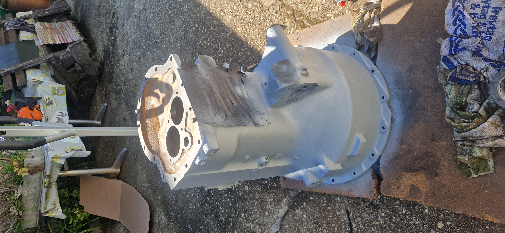

Steyr T80 • Getriebe
Gehäuseaufbereitung
Dokumentation der Oberflächenbehandlung & Grundierung

In diesem Bereich werden die einzelnen Schritte von der Reinigung über das Schleifen bis hin zur Epoxidharz-Grundierung detailliert gezeigt.
Arbeitsschritte der Aufbereitung

1. Grobe Reinigung
Das Getriebegehäuse wird vor den Arbeiten gründlich gereinigt. Mit Kaltreiniger und Hochdruckreiniger werden jahrzehntealte Fettreste, verharztes Öl und grober Schmutz entfernt.

2. Schleifen & Vorbereitung
Entfernen von losem Altlack und Roststellen. Die Guss-Oberfläche wird mechanisch angeraut, während Dichtflächen und Gewindebohrungen sorgfältig geschützt werden.

3. Grundieren
Nach dem Entfetten mit Silikonentferner erfolgt der Auftrag einer hochwertigen 2K-Epoxidharz-Grundierung als dauerhafter Korrosionsschutz für das Gussgehäuse.Es muss darauf geachtet werden das alle Dichtflächen und Lagersitze abgeklebt werden müssen um verunreinigunegen zu vermeiden.